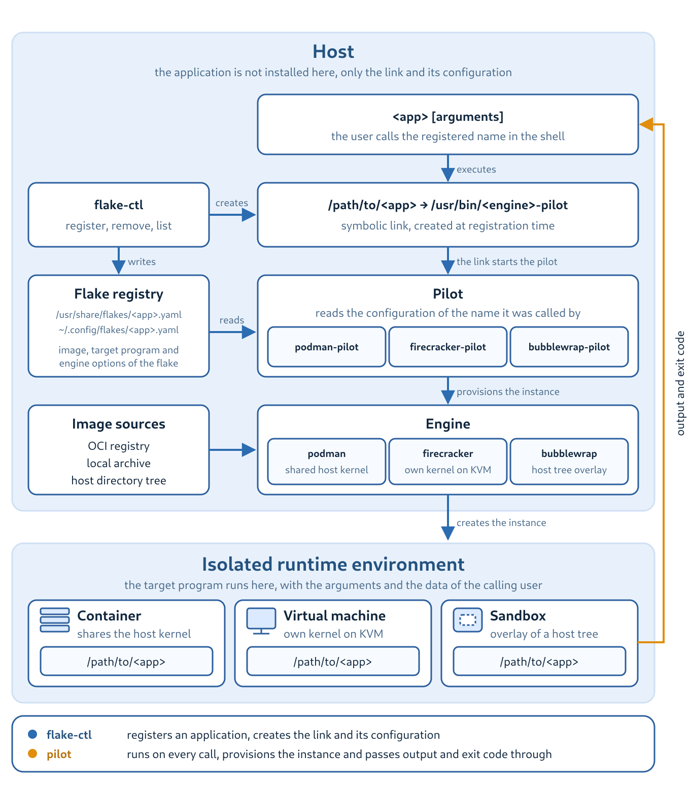

Flake Pilot User Guide
Application Isolation with a Native Feel
Flake Pilot registers, provisions and launches applications that are not installed on your host but are provided inside a runtime environment such as an OCI container, a Firecracker virtual machine or a bubblewrap sandbox. The registered application behaves like any other program on the system: it is called by its name, it reads and writes the data you point it to, and it returns its exit code to your shell. Everything that is needed to run it, the image, the engine and the provisioning of the instance, is handled behind that name.
An application registered this way is called a flake.
How far a flake is separated from the host depends on the engine and on what you share with it, see Isolation and Its Limits and Privileges and Trust before you run code you do not trust.

About This Guide
This guide is written for administrators and developers who want to
provide isolated applications on a Linux host. It explains the
concepts behind flakes, shows how to register applications for the
podman, firecracker and bubblewrap engines, describes the
network setup for virtual machines and documents the layout of the
flake configuration.
The command line of each tool is documented in the manual pages
shipped with the packages, e.g man 8 flake-ctl or
man 8 podman-pilot. This guide references them where the details
matter.
How to Get Started
Install the packages of the engines you want to use as described in Installation. Every engine comes with its own pilot and only the ones you registered applications for are needed.
Warning
System wide podman flakes and bubblewrap flakes with mount points
below their tree, e.g the root of the host, need a sudo rule
for the Flake Pilot helper. A system wide podman flake then runs
as root for every user with the rule, with what its registration
grants on the host. See Privileges and Trust for which
flakes run without the rule before granting it to anyone.
Next, prepare your user environment. Applications registered as a
normal user are placed in a directory of your choice, typically
$HOME/bin, which has to be part of your search path:
mkdir -p ~/bin
export PATH=$PATH:$HOME/bin
flake-ctl init
flake-ctl init creates the registry below $HOME/.config/flakes
and the engine configuration that belongs to it. Called as root
the registry is created in /usr/share/flakes and the registered
applications are available to everybody on the host.
With that in place a first application is one command away:
flake-ctl podman register \
--container docker.io/amazon/aws-cli --app $HOME/bin/aws --target /
aws ec2 help
flake-ctl list shows what is registered on your host. The complete
walk through, including the pitfalls of the user setup, is described
in Getting Started.
Isolating AI Workloads With Firecracker
AI tools are moving fast, they are rarely packaged for your distribution, they want to read your source tree and they talk to the network on their own. Running them in a Firecracker virtual machine keeps them on a kernel of their own and lets you decide which part of the host they can reach.
flake-ctl firecracker pull --name claude \
--kis-image https://ddrasqgvrmpt8.cloudfront.net/claude.x86_64-1.16.0-0.tar.xz
flake-ctl firecracker register --vm claude \
--app $HOME/bin/claude --target /bin/bash \
--overlay-size 20GiB --force-vsock --resume
claude
The application feels local, but it runs on the kernel of the VM and cannot see the file system of the host. The write layer of the instance lives in an overlay of its own. What the tool reaches beyond that is up to you: Firecracker Volumes shares a host directory with it over NFS, which the tool then reads and writes with the rights of the owner of that directory, and Firecracker Networking connects it to everything the host reaches through its outgoing interface. Applications From a Virtual Machine shows the complete example and Isolation and Its Limits summarizes what remains reachable.
An Application Collection With Podman
Cloud SDKs, vendor tools and language specific utilities are often not packaged by your distribution, or only in a version that is too old. Vendors do publish container images for them, and a podman flake turns such an image into a program on your host:
flake-ctl podman register \
--container gcr.io/google.com/cloudsdktool/google-cloud-cli:stable \
--app $HOME/bin/gcloud --target /usr/lib/google-cloud-sdk/bin/gcloud
gcloud version
From here on gcloud is just a command. Collect the tools you need
this way and your host stays clean of the dependencies they drag in,
while each of them can be updated, pinned to a version or dropped
again on its own. Applications From a Container covers the registration
options, engine options and delta containers which keep the data to
pull small.
A Throw Away Host With Bubblewrap
Some tasks want to modify the host: an installation you are not sure
about, a build that scatters files outside of its build directory, a
script from the internet you would rather watch first. The
bubblewrap engine mounts a directory tree, the host root system
included, as the read only layer of an overlay:
flake-ctl bubblewrap register --rootfs / \
--app $HOME/bin/protected-shell --target /bin/bash
protected-shell
Inside of protected-shell the host looks and behaves as usual,
packages can be installed and files can be added or overwritten, but
all of it is written to the overlay of the sandbox instead of the
host. The written data is kept in memory and is gone when the
application terminates, every call starts from the unmodified host
again. Paths you want to change on the host are bound into the
sandbox explicitly. As the host root has further mount points below
it, its overlay is mounted by the Flake Pilot helper, which needs a
sudo rule, see Privileges and Trust.
Applications From a Sandbox describes the tree, the overlay and the options to
share data with the host.
The overlay protects the files of the host from changes, it does not contain the program. A sandbox is not a security boundary, see Isolation and Its Limits.
Isolation and Its Limits
A flake separates an application from the host as far as its engine does, minus everything you share with it. None of the engines makes a flake safe for hostile code on its own. Before you run code you do not trust, check what it can reach:
firecrackerThe application runs on a kernel of its own and cannot see the file system of the host. It reaches the host through what you connect it to:
A volume, see Firecracker Volumes. Every user of the VM reads and writes the exported directory with the rights of its owner on the host. Code in the VM can change, delete or add any file in it, e.g a script or a build file you later run on the host. Export the directory the application works on, not your home directory.
The network, see Firecracker Networking. A connected VM reaches everything the host reaches through its outgoing interface, the local network and internal services included, and appears there with the address of the host. The firewall setup only keeps it away from other instances, from the other interfaces of the host and from the services of the host except NFS, and DNS and DHCP if the host setup was created for a resolver or a DHCP server on the host.
A VM which is neither connected nor given a volume talks to the host only through the serial console or vsock connection of the pilot which starts it.
podmanThe application shares the kernel of the host. It is separated by the container runtime and reaches every path, device and network you hand to it with
--opt, e.g--volumeor--net host. Running the container with thekrunruntime adds a VM, see Deeper Isolation With krun.bubblewrapNot a security boundary. The overlay keeps the tree unchanged, but the application shares the kernel and, unless further
bwrapoptions restrict it, the network and the other namespaces of the caller. Every path bound writable is changed for real. Use it to keep a host clean, not to contain a program, see Applications From a Sandbox.
The trust you place in Flake Pilot itself is a separate question.
Some features need a sudo rule for the Flake Pilot helper, which
runs system wide podman flakes as root for every user with the rule,
and the /systemfiles script of a delta container runs on the host,
as the user who calls the flake, while it is provisioned.
Privileges and Trust lists these features.
Resources
Source code and issue tracker: https://github.com/OSInside/flake-pilot
Packages: https://build.opensuse.org/package/show/Virtualization:Appliances:Builder/flake-pilot
Prebuilt app podman containers: https://gallery.ecr.aws/b9k1j9y6
Prebuild app firecracker images: https://ddrasqgvrmpt8.cloudfront.net
Manual pages: https://github.com/OSInside/flake-pilot/tree/main/doc
Feedback is very much welcome.